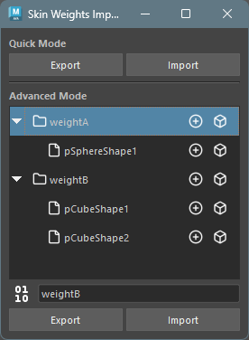
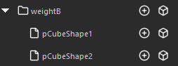
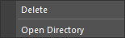

Skin Weights Import/Export
Overview
Can save skin weights to file and import to other geometry. However, cannot import to already bound geometry.
How to Launch
Launch the tool from the dedicated menu or with the following command.
import faketools.tools.rig.skinWeights_import_export_ui
faketools.tools.rig.skinWeights_import_export_ui.show_ui()
Usage
There are Quick Mode for temporarily saving skin weights and Advanced Mode for saving to file.
Export
- Select geometry bound with skinCluster (multiple selection allowed).
- Quick Mode: Press
Exportbutton to save skin weights. - Advanced Mode: Select file format,
enter export group name (folder name), and press
Exportbutton to save skin weights.
Import
- Quick Mode: Press
Importbutton to load saved skin weights. - Advanced Mode: Select group or file
to import from list and press
Importbutton to load saved skin weights.
Import is not performed in the following cases:
- When geometry to import doesn’t exist.
- When influences to import don’t exist.
- When influences to import are bound.
How to Select Geometry During Import
- To import to geometry selected during export, deselect everything before importing. Searches for that name from scene as target geometry.
- To import to geometry with different name from geometry selected during export, select geometry to import before importing.
Select Weight Data Elements

In Advanced Mode weight data list,
clicking icon on right side of each data allows you to
select that data’s elements.
Select Influences
Select Geometry
Options
Context Menu

Right-clicking on each button in
Quick Mode or on tree view in
Advanced Mode displays context menu.
- Delete
- Deletes selected data.
- Open Directory
- Opens directory where data is saved in Explorer.
File Format

Selects file format when exporting in
Advanced Mode. Clicking button switches
format.
Select whether to save file in binary format
(pickle) (left) or text format
(json) (right).